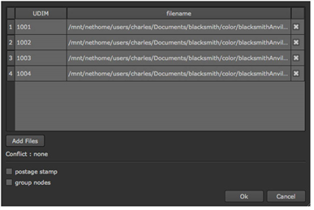
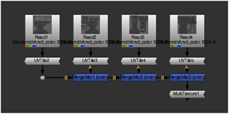

当将纹理应用于使用标准 (0,0)-(1,1) 范围之外的 UV 空间区域的模型时，通常为每个 1x1 正方形使用一个纹理。这些纹理可以以各种方式进行编号。UDIM 是一个编号方案，它将应用于 (0,0)-(1,1) 区域的第一个纹理识别为 1001，每个纹理在 U 方向上的数字增加一个, 每个纹理在 V 方向上的距离为 10。
例如，区域 (1,0)-(2,1) 的纹理将具有 UDIM 1003，(0,1)-(1,2) 的纹理将具有 UDIM 1011。遵循 UDIM 方案的一组补丁可能如下所示:
• Color.1001.tif
• Color.1002.tif
• Color.1003.tif
• Color.1004.tif
• Color.1005.tif
其中 color 是频道名称，1001，1002，.是 UDIM 空间中每个补丁的 UDIM 值。在 Nuke ,您可以按照 UDIM 方案导入一组面片，并将它们快速应用于三维对象的曲面。要做到这一点:
| 1。 | 选择 图像 > UDIM 导入 从工具栏中。 |
| 2. | 选择要导入的 UDIM 图像或序列，然后单击 打开 . |

| 3. | 要忽略单个补丁，请禁用它旁边的复选框。 |
| 4. | 要添加其他修补程序，请单击 添加文件 . |
注意:
如果您添加的修补程序之间存在冲突，则会在
添加文件
描述冲突的按钮。
典型的冲突是，如果您试图导入共享相同 UDIM 值的多个文件。
| 5. | 检查 邮票 复选框，在 “读取” 节点上启用修补程序的缩略图视图。 |
| 6. | 检查 组节点 复选框将每个修补程序的读取节点放置到组节点中。组节点的名称基于图像或序列的名称。 |
| 7. | 单击 好 导入文件。 |
这将为序列中的每个修补程序创建一个读取节点，并将一个 UVTile 节点 (允许您修改 UV 空间中修补程序的坐标) 附加到每个修补程序。

注意: 如果你检查 组节点 在 “UDIM 导入” 对话框中，突出显示组节点并按 Ctrl 返回 ( Cmd 返回 在 Mac 上) 查看内容。
每个补丁的 UDIM 值插入到 Udim UVTile 节点中的字段。这个值很重要，因为它将每个读取节点 (因此也是补丁) 偏移到正确的 UDIM 空间。许多 MergeMat 节点用于组合读/UVTile 节点组合。
注意: 当多个 MergeMat 节点链接在一起时，树末尾的多纹理节点优化渲染。它使用默认的 Iop 顶点着色器，只处理多纹理。此节点没有字段或旋钮，仅用于 UDIM 导入 操作。
要将这些修补程序应用于场景中的 3D 对象，只需将树中最后一个节点的输出连接到 Img ReadGeo 节点的输入。
要将修补程序移动到 UV 空间中的不同点，请在 UVTile 控制面板中输入不同的 UDIM 值或禁用 Udim 字段并在 u 和 v 字段。
注意: 默认情况下, UDIM 导入 操作根据 UDIM 号解析文件名。但是，可以创建一个自定义解析函数来使用您自己的命名约定。有关如何执行此操作的详细信息，请参阅 Python 开发人员指南。
|
|